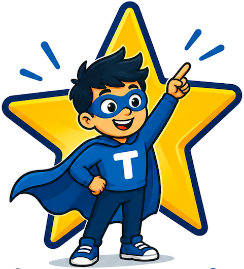

Taalhelden0punten
0behaalde beloningen
Volgende beloning
0 / 500 punten
Kies je groep
Oefening
Leesavontuur
Reis, lees en ontdek de wereld.
Voortgang
Resultaten blijven bewaard op dit apparaat.
Laatste sessies
| Datum | Onderdeel | Niveau | Score |
|---|
Leerdoelen en leerlijnen
Afstemming op landelijke kaders en gangbare taalmethodes.
Instellingen
Pas de app aan of wis opgeslagen gegevens.
Lengte oefeningen: 15 opdrachten per gewone oefening en 25 kaarten in Woordjes trainen.
Gegevens wissen
De onderdelen hieronder worden los van elkaar gewist. Iedere knop vraagt eerst om bevestiging.
Beloning verdiend!
Je hebt 500 punten verzameld en een beloning verdiend!
Oefeningen laden…